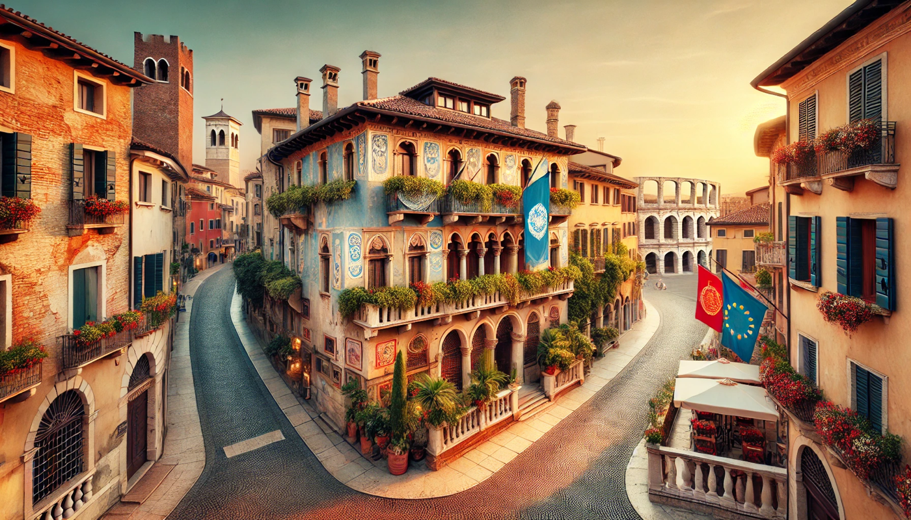

Freedom, Love, and Conflict in Renaissance Verona

In Romeo and Juliet, Shakespeare depicts freedom as the defiance of societal constraints in pursuit of love. Verona in the Renaissance was a patriarchal world
where family honor, social duty, and rigid hierarchies dictated personal choices. In such a setting, love itself becomes an act of rebellion. Juliet encapsulates
this defiance when she declares, “My only love sprung from my only hate! / Too early seen unknown, and known too late!” (Romeo and Juliet, I.v.136-137). Her
realization reflects the paradox of love as both liberating and constrained by the enmity between their families. The idea of freedom is further explored
through Romeo and Juliet’s willingness to risk everything for their love. Their secret marriage is a profound act of resistance against the feud dividing their
families. When Juliet proclaims, “Deny thy father and refuse thy name; / Or, if thou wilt not, be but sworn my love, / And I’ll no longer be a Capulet” (Romeo
and Juliet, II.ii.34-36), she underscores the transformative power of love to transcend societal boundaries. Yet, their freedom comes with significant costs.
Romeo’s words in the tomb, “Here’s to my love! [Drinks.] O true apothecary! / Thy drugs are quick. Thus with a kiss I die” (Romeo and Juliet, V.iii.119-120),
poignantly illustrate that their ultimate liberation is achieved only through death. Shakespeare’s portrayal of freedom also highlights the tension between
personal desires and societal expectations. While Romeo and Juliet achieve a transcendent love, their deaths underscore the limitations of individual freedom
within rigid social structures. Shakespeare challenges us to consider: What is true freedom? Is it the courage to defy societal norms, or the wisdom to navigate
them without losing oneself?